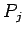
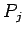
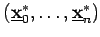
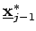
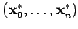
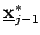

Die Berechnung der Funktionalgleichung
| (18.131) |
entspricht der Bestimmung einer optimalen Politik für den mit dem Zustand  startenden Teilprozeß , welcher aus den letzten n-j+1 Stufen des Gesamtprozesses P besteht und dem die Kostenfunktion
startenden Teilprozeß , welcher aus den letzten n-j+1 Stufen des Gesamtprozesses P besteht und dem die Kostenfunktion
| (18.132) |
zugrunde liegt. Die optimale Politik des Prozesses Pj mit dem Anfangszustand  ist unabhängig von den Entscheidungen in den ersten j-1 Stufen von
ist unabhängig von den Entscheidungen in den ersten j-1 Stufen von  , die zum Zustand
, die zum Zustand  führten. Für die Ermittlung von
führten. Für die Ermittlung von  wird die Größe benötigt. Ist nun eine optimale Politik für , dann ist offensichtlich eine optimale Politik für den Teilprozeß Pj+1 zum Anfangszustand . Diese Aussage wird im BELLMANNschen Optimalitätsprinzip verallgemeinert.
wird die Größe benötigt. Ist nun eine optimale Politik für , dann ist offensichtlich eine optimale Politik für den Teilprozeß Pj+1 zum Anfangszustand . Diese Aussage wird im BELLMANNschen Optimalitätsprinzip verallgemeinert.
BELLMANNsches Prinzip: Ist  eine optimale Politik eines Prozesses P und  die zugehörige Zustandsfolge, dann ist für jeden Teilprozeß , mit dem Startzustand  die Politik ebenfalls optimal (s. 18.1).
eine optimale Politik eines Prozesses P und  die zugehörige Zustandsfolge, dann ist für jeden Teilprozeß , mit dem Startzustand  die Politik ebenfalls optimal (s. 18.1).